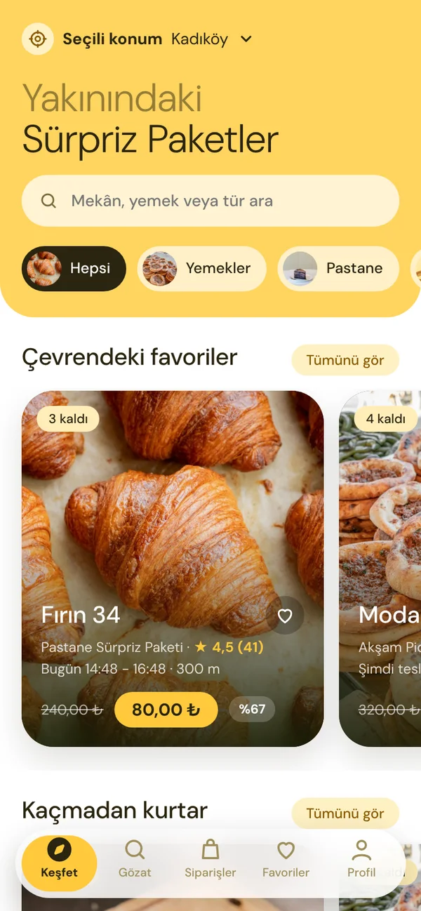
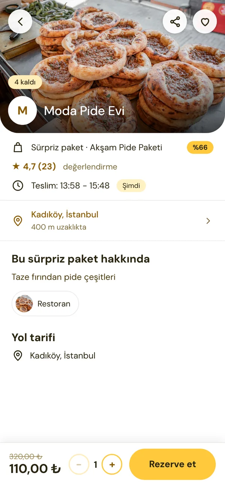
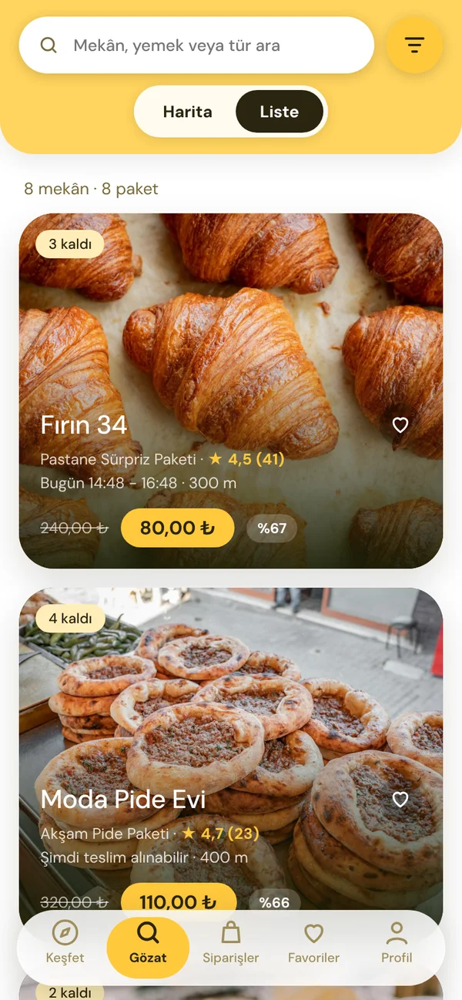
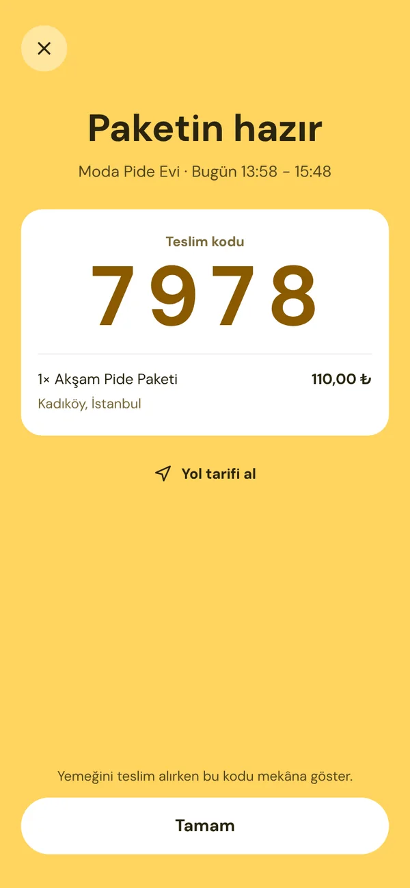

Gıda israfına karşı
İyi yemek çöpe gitmesin
Kırıntı, kapanıştan önce satılamayan ama hâlâ taptaze yemekleri mahalledeki restoran, fırın, kafe ve manavlardan sürpriz paket olarak uygun fiyata sana ulaştırır.


Kaynak: FAO ve UNEP gıda israfı raporları.
Nasıl çalışır?
Üç adımda paketin elinde
Telefonundan birkaç dokunuşla yakınındaki bir mekânın artan yemeğini kurtar.
-

Yakınındakini keşfet
Haritada veya listede mekânları gez. Teslim saati, tür, mesafe ve fiyata göre filtrele.
-
Sürpriz paketini ayır
Beğendiğin paketi seç, kaydırarak onayla. Teslim saati başlamadan istediğin zaman iptal edebilirsin.
-

Kodunla teslim al
Belirtilen saatte mekâna git, 4 haneli kodunu göster ve paketini al. Afiyet olsun.
Neler kurtarılır?
Her damak için bir paket
Restoranlardan fırınlara, kafelerden manavlara kadar günün artan ürünleri.


Neden Kırıntı?
Cebine, mahalleline ve gezegene iyi gelir
Uygun fiyat
Paketler normal fiyatın çoğu zaman yarısı veya daha azı.
Daha az israf
Çöpe gidecek yemeği ve üretimine harcanan kaynakları kurtarırsın.
Yeni lezzetler
Yakınındaki restoran, fırın, kafe ve manavları keşfet.
Kolay teslim
Rezerve et, kodunu göster, paketini al. Sıra beklemek yok.
İşletmeler için
Artan yemeği gelire dönüştür
Restoran, fırın, kafe veya manav: gün sonunda kalan ürünleri çöpe atmadan yeni müşterilere ulaştır.
- Paket sayısını, fiyatı ve teslim saatini kendin belirle.
- Tekrarlayan paketleri bir kez kur, her gün otomatik yayınlansın.
- Teslimi müşterinin 4 haneli koduyla saniyeler içinde onayla.
- Satışlarını, kazancını ve müşteri puanlarını panelden takip et.
Sık sorulanlar
Aklına takılanlar
Sürpriz paket nedir?
Kapanıştan önce satılamayan ama hâlâ taptaze ürünlerin, içeriği sürpriz olarak, normal fiyatın çok altında satıldığı pakettir. İçerik gün sonuna göre değişir; alerjen bilgisi paket sayfasında yer alır.
Ödemeyi nasıl yaparım, paketi nasıl alırım?
Uygulamada paketi rezerve eder, mekânın belirttiği saat aralığında 4 haneli kodunu göstererek teslim alırsın. Ödeme adımı şu anda test aşamasındadır; gerçek kart tahsilatı açıldığında duyuracağız.
Rezervasyonumu iptal edebilir miyim?
Evet. Teslim saati başlamadan önce Siparişler sekmesinden iptal edebilirsin; paket stoğa geri döner. Ödeme aktif olduğunda tutar sana iade edilecek.
Paketimi zamanında alamazsam ne olur?
Teslim saati geçen siparişler “teslim alınmadı” olarak kapanır. Bu yüzden saat aralığını rezervasyondan önce kontrol etmeni öneririz.
İşletmem nasıl katılır?
Yukarıdaki formu doldur, seninle iletişime geçelim. Katıldıktan sonra paket sayısını, fiyatı ve saati kendin belirler, teslimleri kodla onaylarsın.
Hangi şehirlerdesiniz?
Henüz yayında değiliz. İlk şehrimiz açılırken haber almak için aşağıdaki listeye katılabilirsin.
Açıldığında ilk sen öğren
Şehrin açılınca haber verelim. Spam yok, yalnızca bir e-posta.